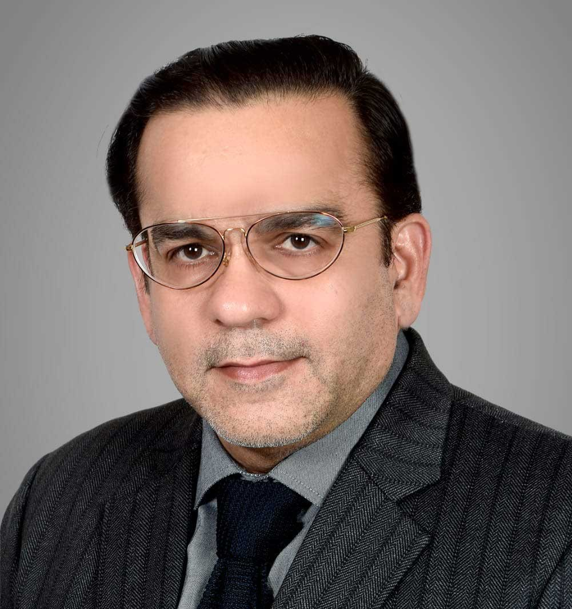

Mr. Ali Akbar M. Shroff
Aliakbar Shroff is a noted philanthropist and social worker from India. He has been involved with many charities and social projects in India over the last 15 years. He has a business of import and distribution of body care products and exports of stationery products, in addition to being a real estate investor. Aliakbar is married with 3 children, 2 of whom have joined him in his business and the third is studying.
Read full profile
Aliakbar is a Trustee with Kesarbaug Trust, Khoja Girls Orphanage and Haji Nazarali Imambargah amongst others. He has also served the KSI Jamaat Mumbai as Secretary for 3 years and as Vice President for 4.5 years. During his association with KSI Jamaat Mumbai he was instrumental in bringing focus to Education, Medical, Economic Upliftment and Capacity Building, all of which grew 3 to 4 times in a span of 7 to 8 years.
He was also instrumental in the formation of the India Federation (parent body of all KSI Jamaats of India) in 2013, uniting the diverse community across Gujarat, Maharashtra, Karnataka and Telangana on one platform towards common developmental objectives and coordinated relief work. He served as the Secretary of the India Federation from inception until 2021 (8 years).
Aliakbar has also led notable capital projects, including 2 graveyard projects in Mumbai, the redevelopment of Haji Nazarali Imambargah into a modern facility with state of the art infrastructure, and the refurbishment of KesarBaug Hall, the KSI Jamaat office, Madressa and Arambaug in Mumbai. He is also the first elected Councillor to represent the India region at the World Federation, elected for 2 consecutive terms from 2017 to 2021 and from 2021 to 2024. Aliakbar was also the JIBA president for the Mumbai chapter and went on to serve as the President of JIBA International for one term.